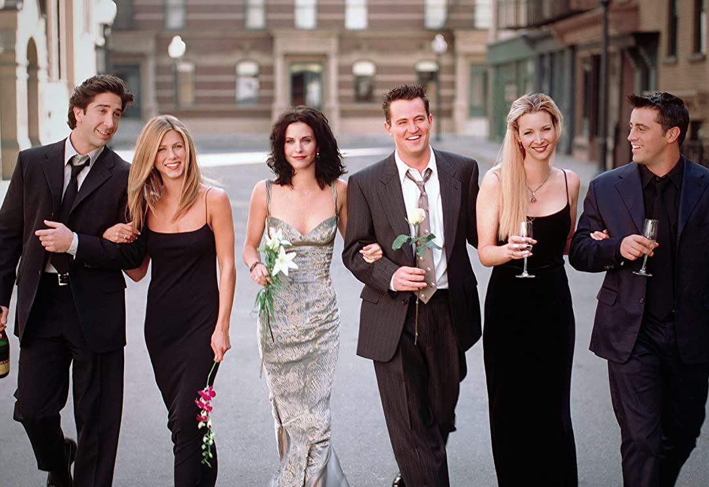

Friends é uma série americana em formato de Sitcom, criada por David Crane
e Marta Kauffman, que durou 10 anos, com seu primeiro episódio no dia 22 de setembro de 1994 e seu
último episódio no dia 6 de maio de 2004.
Friends conta com 6 personagens principais, (da esquerda para direita) Ross Geler, Rachel Green,
Monica Geller, Chandler Bing, Phoebe Buffay e Joey Tribbiani, que vivem suas vidas na cidade grande de Nova
York.
Rachel é a garota mimada que deixa o noivo no altar para viver com a amiga dos tempos de escola, Monica,
sistemática e apaixonada pela culinária. Monica é irmã de Ross, um paleontólogo que é abandonado pela
esposa, que descobriu ser lésbica. De frente ao apartamento de Monica e Rachel, moram Joey, um ator
frustrado, e Chandler, de profissão misteriosa. E Phoebe, que é massagista e antiga colega de quarto de
Monica.